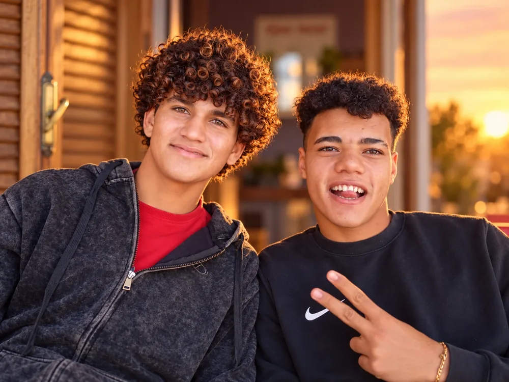
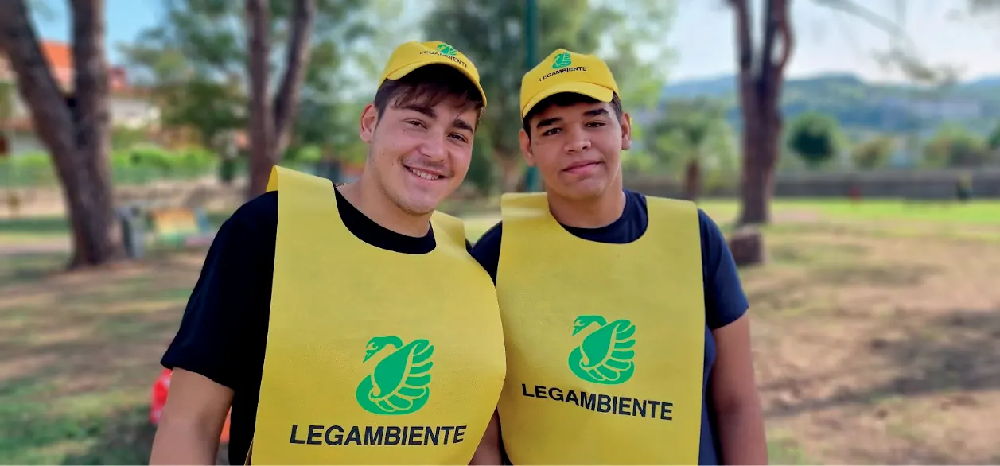
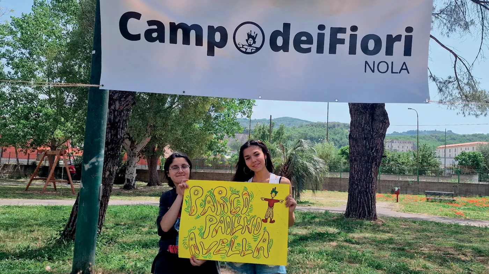

Campo dei Fiori
Un'associazione di volontariato e due cooperative sociali, nate dalla stessa storia: quella di un gruppo scout che nel quartiere Gescal ha scelto di restare, accogliere e costruire comunità.


Associazione Campo dei Fiori
Le radici del gruppo: il Centro Sociale, la Scuolettina, oggi la cura del Parco Paolino Avella come luogo educante.
Le Radici e l'associazione →
Cooperativa Campo dei Fiori
Le comunità Itaca e Bella 'Mbriana: case che accolgono bambini e ragazzi e li accompagnano nel loro viaggio.
Itaca e Bella 'Mbriana →
Cooperativa Lindberg
Willy Coyote, Fortapasc e Macramè: accoglienza e percorsi verso l'autonomia per giovani dai 17 ai 21 anni e oltre.
Willy Coyote, Fortapasc, Macramè →Il Villaggio Campo dei Fiori
Il posto dove ogni storia merita di essere raccontata e custodita. Ragazzi, operatori e amici delle nostre comunità si ritrovano online:
- il giornale e la piazzetta delle comunità
- i messaggi in bottiglia e i profili dei ragazzi
- l'isola di Robinson e i progetti educativi

campodeifiori.org/villaggio
Le attività dell'associazione vivono grazie a chi ci è vicino. Bastano pochi euro, o una firma.
5×1000
Nella dichiarazione dei redditi firma nel riquadro del volontariato e scrivi il codice fiscale:
10 € al mese
Ma anche solo 5 €. Bonifico intestato a Campo dei Fiori:
La Boccaccia
Cerca il nostro barattolo nei negozi aderenti di Nola: sostiene il Parco Paolino Avella.

Parliamone
Vuoi diventare volontario, collaborare con noi o saperne di più sulle nostre comunità? Scrivici o chiamaci.
- Telefono
- 349 295 0563
- PEC
- campodeifiorinola@pec.it
- Dove
- Nola (NA) · quartiere Gescal